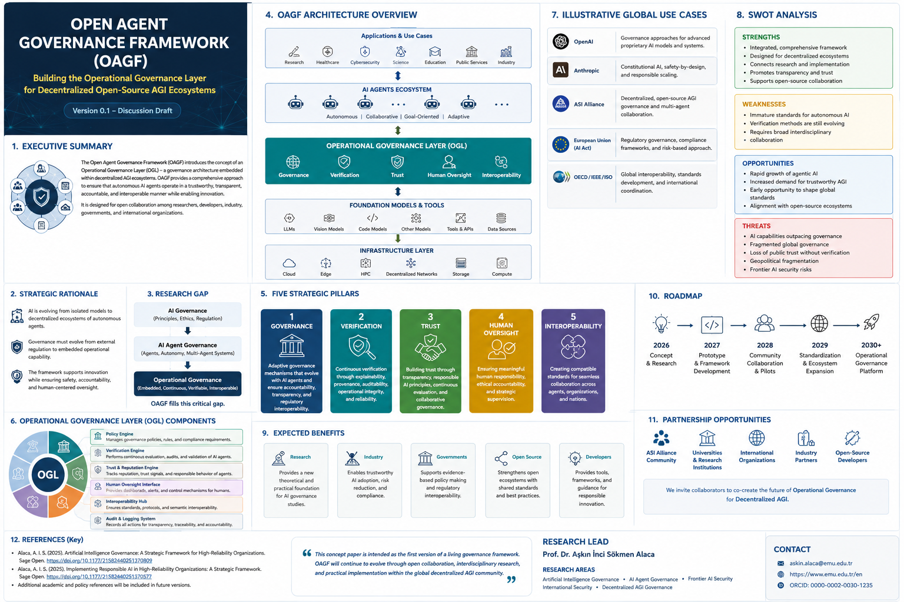

Governance
Adaptive governance mechanisms that evolve alongside autonomous AI systems.
Building the Operational Governance Layer for Decentralized Open-Source AGI Ecosystems
OAGF positions governance not as a regulatory afterthought, but as an operational capability embedded within autonomous AI ecosystems.
🏛 View ArchitectureThe future of AGI depends not only on more capable intelligence, but on more capable governance.
Current AI governance frameworks largely focus on ethics, regulation, responsible AI, and model-level safety. Decentralized AGI ecosystems require continuous governance mechanisms capable of supporting autonomous agents throughout their lifecycle.
OAGF addresses this governance gap by integrating verification, trust, human oversight, interoperability, and frontier AI security in one operational architecture.

Adaptive governance mechanisms that evolve alongside autonomous AI systems.
Continuous evaluation of provenance, reliability, auditability, and operational integrity.
Transparent and accountable infrastructures that support responsible adoption.
Meaningful human responsibility, ethical accountability, and strategic supervision.
Compatible governance standards across agents, protocols, institutions, and jurisdictions.
Framework definition, white paper, and community outreach.
Governance architecture, pilot tools, and verification methods.
Collaboration with developers, researchers, and ecosystem partners.
Interoperability principles and broader ecosystem adoption.
A living governance layer for decentralized AGI ecosystems.
Researchers, universities, AI companies, standards organizations, international organizations, and open-source communities are welcome to collaborate on the Open Agent Governance Framework (OAGF).
Research collaborations, invited talks, workshops, and policy partnerships are welcome.
Research collaborations, invited talks, workshops, and policy partnerships are welcome.
OAGF is designed as a living framework. Researchers, developers, AI safety experts, governance specialists, international organizations, and open-source contributors are invited to participate.
Collaborate on GitHub